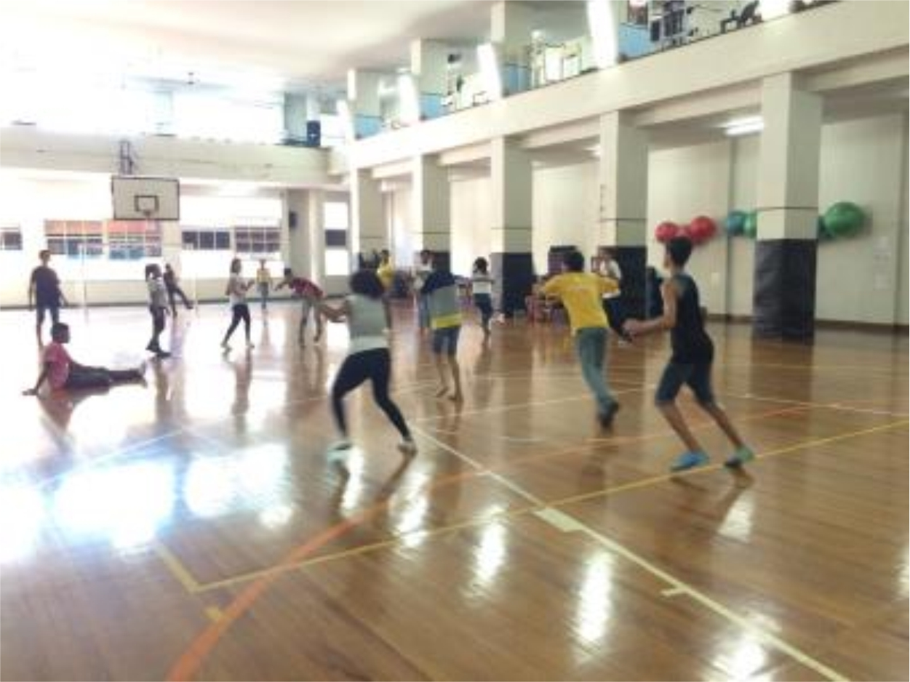
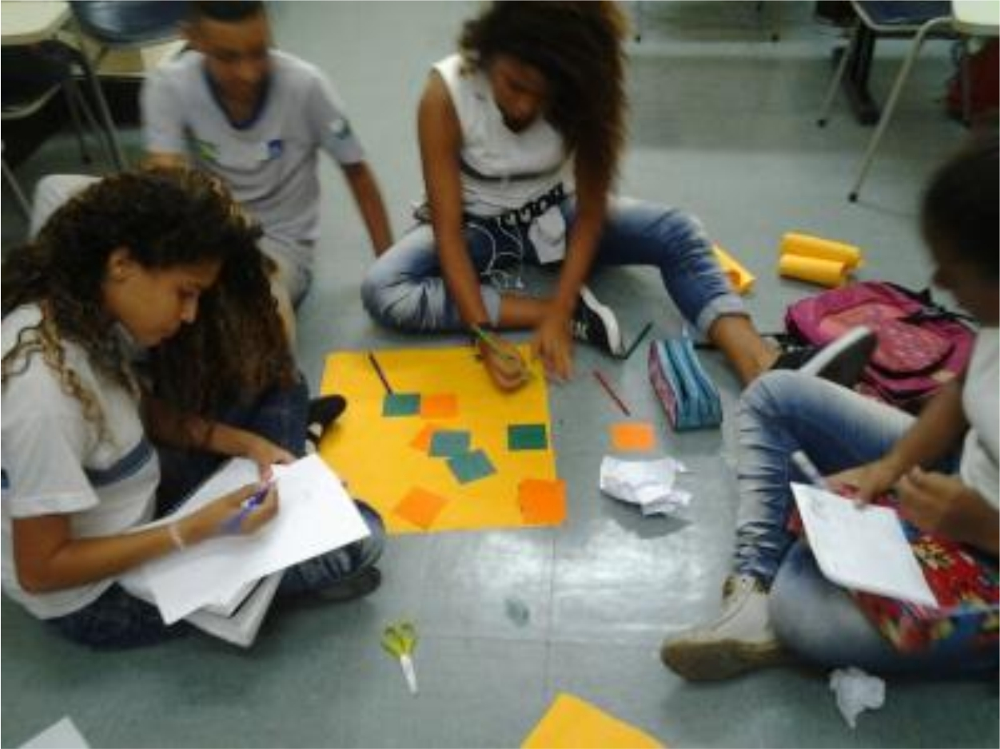
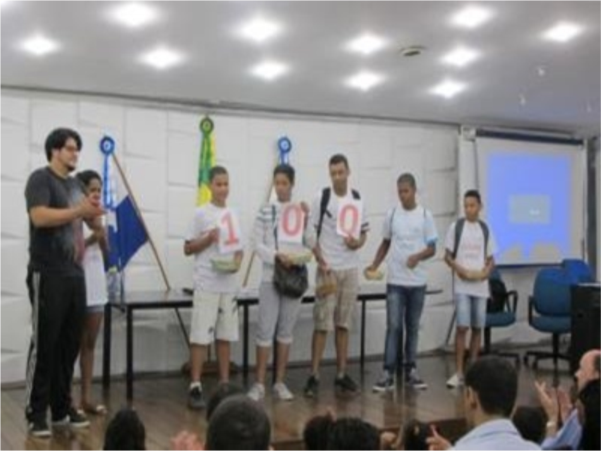
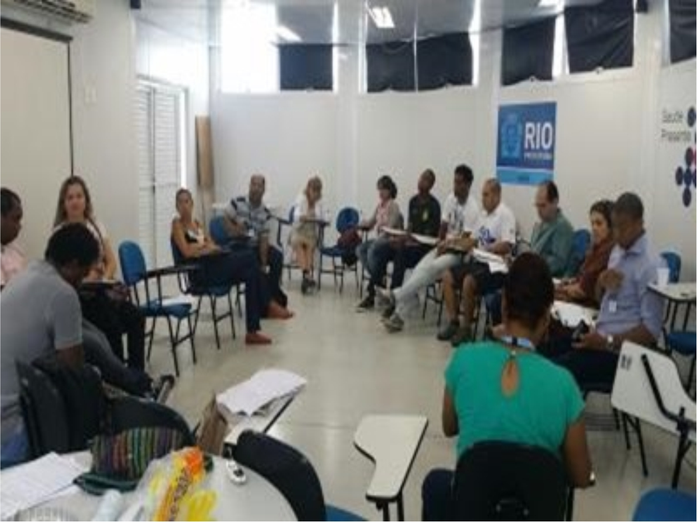
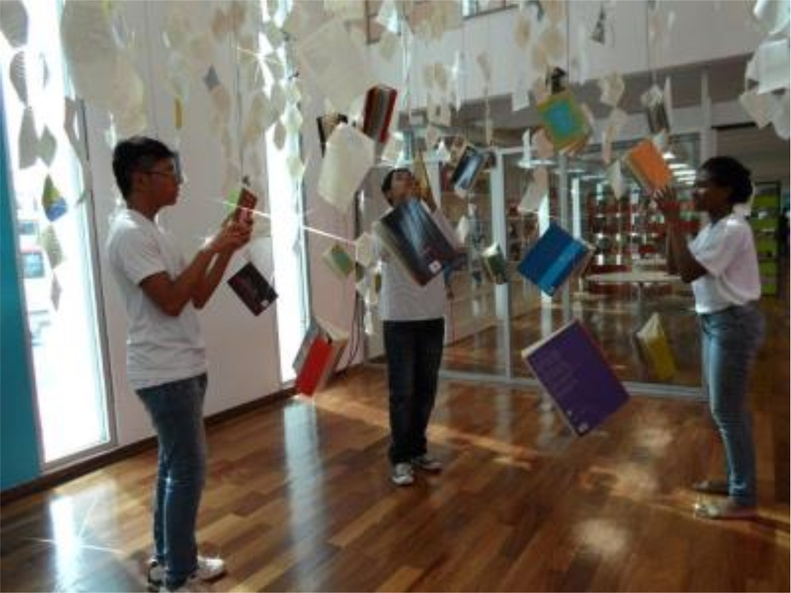

A Fundação MUDES, criou e desenvolve desde 2006 o PASS, que tem por missão realizar ações socioeducativas e socioassistenciais para adolescentes, no município do Rio de Janeiro, visando contribuir para o acesso ao mundo do trabalho e a superação de dificuldades na aprendizagem, observando as Legislações pertinentes da Assistência Social.
O PASS é um programa de assistência social, pautado na defesa e afirmação dos direitos e desenvolvimento de capacidades e potencialidades, com vistas a contribuir no processo de emancipação para o enfretamento da vulnerabilidade social e preparação para a integração no mundo do trabalho, conforme Resolução Nº 33 do Conselho Nacional de Assistência Social.
O Programa também promove atendimento psicopedagógico e socioeducacional a crianças, adolescentes de 06 a 18 anos de idade incompletos, oriundos das escolas da rede pública, pertencentes a famílias com perfil de programas de transferência de renda (Bolsa Família, Cartão Família-Carioca e o CAD Único) e encaminhadas pela rede Socioassistencial.
Atividades socioeducativas e socioassistenciais realizadas:
• Ações socioeducativas pautadas em experiências lúdicas, culturais, esportivas e lazer como formas de expressão verbal, escrita e corporal, interação, aprendizagem, sociabilidade e proteção social para crianças inseridas no ensino infantil e adolescentes do Ensino Fundamental e de outros Projetos educacionais;
• Oficinas e Feiras Sociais em escolas municipais, com temáticas voltadas para o mundo do trabalho, sexualidade, violência, combate a exploração sexual e ao trabalho infantil, entre outros assuntos relacionados ao universo jovem e da criança;
• Oficinas sobre os cuidados com a saúde, entre outras atividades continuadas em Campanhas de prevenção e promoção da saúde sobre as DST/AIDS, contribuindo para redução da incidência de infecção pelo HIV/HPV, tuberculose, hepatites virais e outras doenças oportunistas e epidemias periódicas;
• Desenvolvimento de práticas esportivas e de lazer, com vistas ao desenvolvimento de novas sociabilidades;
• Desenvolvimento de práticas esportivas e de lazer, com vistas ao desenvolvimento de novas sociabilidades;
• Realização de Circuitos Culturais e lazer.
• Oficinas Socioassistenciais referentes aos temas transversais: Cultura da Paz – Ser Adolescente - Sexualidade e Afetividade (nas Escolas Municipais)
O programa também disponibiliza atendimentos e encaminhamentos de acordo com a demanda apresentada pelo público alvo. A Fundação MUDES, por meio do PASS, atua na sua área social em rede, como prevê o ECA e o Sistema de Garantia de Direitos, que pressupõe e se confirma a forma de organização horizontal, conectada, autônoma, participativa, colaborativa e de decisão compartilhada, onde os adolescentes, crianças e famílias são atendidas em suas queixas e necessidades.
O programa também disponibiliza atendimentos e encaminhamentos de acordo com a demanda apresentada pelo público alvo. A Fundação MUDES, por meio do PASS, atua na sua área social em rede, como prevê o ECA e o Sistema de Garantia de Direitos, que pressupõe e se confirma a forma de organização horizontal, conectada, autônoma, participativa, colaborativa e de decisão compartilhada, onde os adolescentes, crianças e famílias são atendidas em suas queixas e necessidades.
Requisitos para participação:
• Ter entre 06 a 18 anos incompletos;
• Estar matriculado na rede pública de Ensino, ou;
• Encaminhado pelo CRAS e PROINAPE.
Local para Inscrição: Rua México, nº 119 – 12º andar.
Documentação: Certidão de Nascimento ou Identidade; CPF; Comprovante de Residência e Declaração Escolar.
Obs: Vir acompanhado de responsável legal.
Participações nos Espaços de Controle Social
• Assento no Conselho Municipal dos Direitos da Criança e do Adolescente - CMDCA (Gestão 2011-2013 e 2013-2015);
• Coordenação da Comissão de Políticas Públicas do CMDCA (Gestão 2011-2013 e 2013-2015);
• Assento no Conselho Municipal de Assistência Social (Gestão 2009-2011, 2011-2013 e 2015-2017);
• Membro da Comissão Local da 1ª Coordenadoria de Assistência Social – CDS (Gestão 2009-2011 e 2013-2015);
• Componente da Coordenação Colegiada do Fórum Estadual de Aprendizagem – FEAP (Gestão 2013-2015);
• Fórum Estadual de Aprendizagem – FEAP.
• Fórum Estadual de Erradicação ao Trabalho Infantil –FEPETI;
• Fórum Estadual ONG AIDS;
• Fórum Estadual Tuberculose;
• Rede Local – CRAS Ismênia de Lima Martins;
• Fórum Gestor – 1ª CDS;
• Fórum Rio Direitos da Criança e do Adolescente;





Parceria
• Associação dos Empregados do Comércio – AEC;
• Religiosas de Maria Imaculada – RMI;
• PROINAPE – Programa Interdisciplinar de Apoio às Escolas Municipais do Rio de Janeiro;
• CRAS – Centro de Referência de Assistência Social.
Certificações
• Conselho Municipal de Assistência Social – CMAS
• Conselho Municipal dos Direitos da Criança e do Adolescente – CMDCA;
• Certificado de Utilidade Pública Estadual;
• Certificado de Entidade Beneficente de Assistência Social - CEBAS;
• Mais Informações